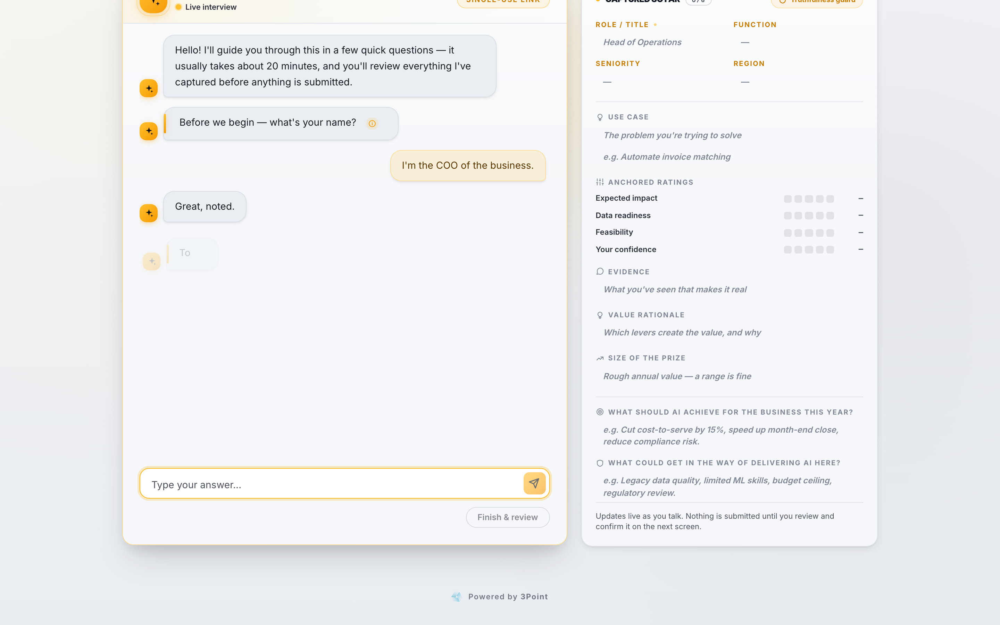
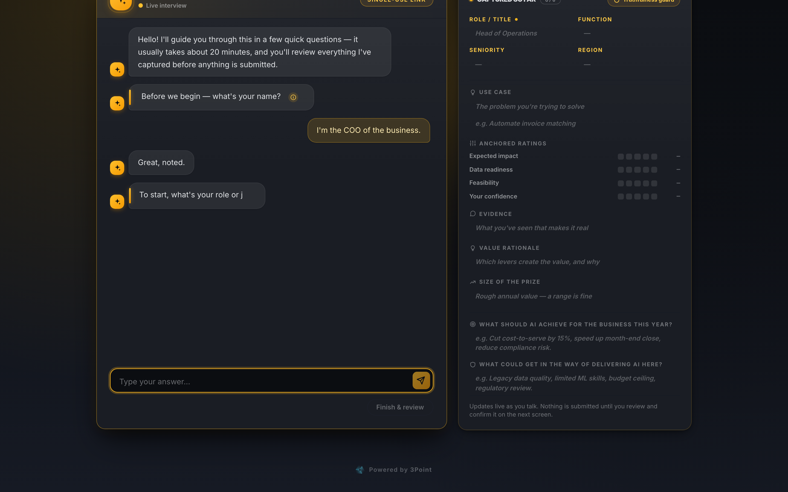

An interviewer that never has an off day.
Every stakeholder gets the same rigorous discovery interview — warm, about 20 minutes, in their language — and watches exactly what the AI captured, live. Nothing is submitted until they've reviewed it.


A real interview, playing live
A scripted replay of the actual arc — anchored ratings, an evidence probe, and the truthfulness guard catching the model trying to guess a number the stakeholder never said. The right-hand panel is the live glass box.
The server is the brain. The model is the voice.
We don't let a language model improvise an interview. After every answer the transcript is re-read, the interview state is recomputed deterministically, and the model is steered to exactly one next question.
A deterministic arc
Profile → idea → four anchored ratings → evidence → value → goals. The same rigorous sequence for every stakeholder, every time — no drift, no skipped steps.
Truthfulness guards
Nothing counts unless the stakeholder actually said it. Answers must appear in their own words; each 1–5 rating must match a number they literally gave. Hallucinated answers are simply re-asked.
A live glass box
The “captured so far” panel fills in as they talk — profile, ideas, ratings, evidence. The respondent watches what the AI heard, in real time.
The questions a good analyst would ask.
Ratings alone aren't discovery. The interviewer probes the way a discovery data scientist would — and it never forgets to:
- 1 Anchor every 1–5 rating (“1 = minor, 5 = transformative”) — tap to answer
- 2 Ask for the evidence: “what have you seen or measured that makes you believe it?”
- 3 Quantify the prize: annual value, hours or volumes — a range is fine
- 4 Challenge inconsistency: big claimed impact but low confidence gets one polite query
- 5 Offer a second idea exactly once — then move on, never loops
Review before anything is submitted.
Review-before-submit
The conversation ends on a pre-filled form of everything captured. The stakeholder corrects anything that's off — then submits. The AI never has the last word.
Always a fallback
If the AI is unavailable, the structured form takes over instantly. Nothing typed is lost, and the study never stalls.
Secure & sovereign
Single-use private links. Blind capture — respondents never see each other's answers. The AI runs on our own infrastructure; your data never trains shared models.
Nine languages. Real conversations.
The interviewer speaks English, 中文, हिन्दी, Español, Français, Italiano, Deutsch and العربية — switch this page's language and the screenshot above shows the real conversation in that language.
Let it interview you.
Book a demo and take the 20-minute interview yourself — then watch your answers become a ranked roadmap.
Book a demo